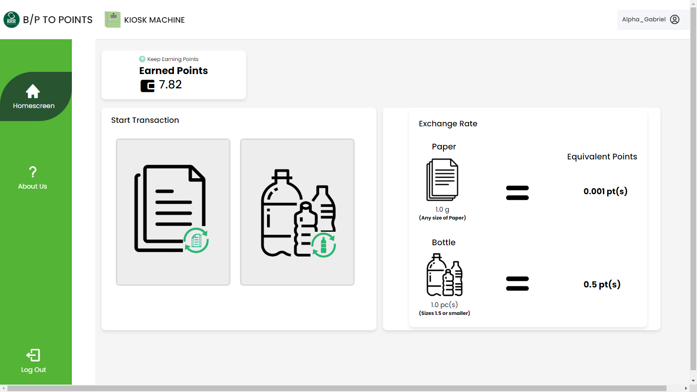
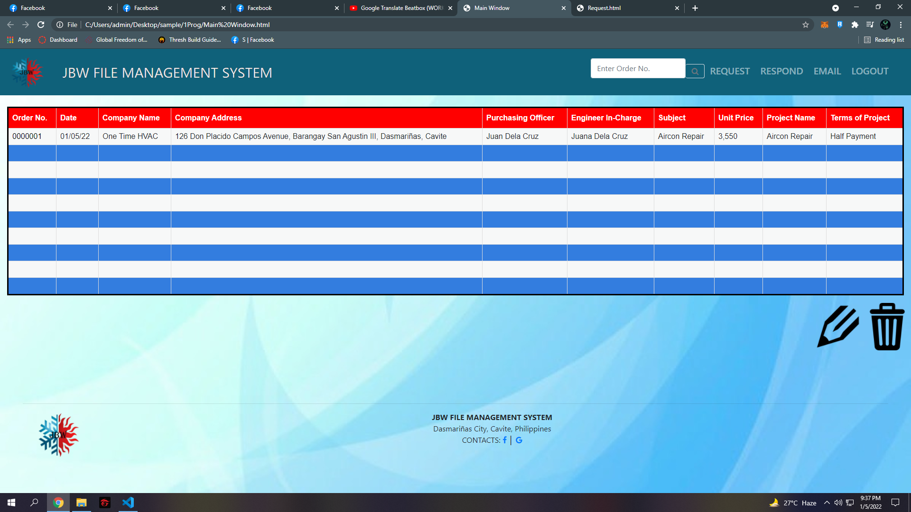

In this project, we made a system that helps the university on dealing with paper and PET bottle waste that is not being recycled properly
and at the same time giving back on both the students and faculty teachers rewards according to the accumulated points.


In this project, we made a web-based ordering system that aims to make an efficient way of sending our customers favorite blends of morning beverage right on their doorstep.

In this project, we made a web-based file organizer that sends a purchase order to the company that owned this system and they can respond by using a request quotation to finalize the transaction.